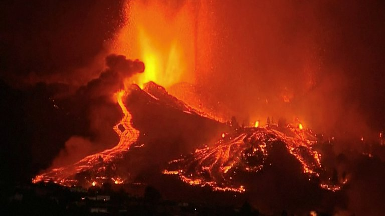

MUNDO
Masiva evacuación en España: más de 5.000 personas fueron desalojadas por la erupción del volcán en la isla de La Palma
El nivel de emergencia se elevó al máximo y la lava afecta las viviendas de las zonas cercanas a la Cumbre Vieja
19 de Septiembre de 2021

La lava sale del volcán en el parque nacional de Cumbre Vieja en El Paso, en la isla canaria de La Palma (Reuters)